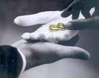

=Psicologia do Homem e da Mulher=
Cada pessoa tem a sua própria maneira de
“ser”. Uns são
mais comunicativos, gostam de conversar, de externar as suas idéias, de revelar
os seus conhecimentos, tem imaginação fértil para idealizar projetos, configurar
organizações, são mais destemidos e corajosos sempre dispostos a inovar; outros
são carinhosos, delicados e extremamente atenciosos, enquanto outros possuem
apenas algumas destas qualidades e alguns, são mais sérios, de poucas palavras,
mais observadores, embora delicados e afetivos. As pessoas são completamente
diferentes uma da outra.
Esta realidade
acontece em ambos os sexos. Além do gênio, das virtudes e características
pessoais, cada indivíduo possui também a sua própria e única impressão digital e
um singular formato da pupila dos olhos, que são imutáveis, diferentes de todos.
São duas características essencialmente pessoais, que identifica e qualifica a
pessoa. É verdade que também existem semelhanças entre duas ou mais pessoas, mas
uma igualdade total e absoluta, isto não existe.
Duas pessoas começam a se conhecer
na caminhada existencial através do flerte inicial e do Namoro, onde alimentam
a possibilidade de construir algo mais sério entre eles.
Na
continuidade do Namoro, por meio das conversas, das revelações e intimidades
amorosas, que surgem e acontecem espontaneamente, robustece o entendimento
mútuo, formando um inicio de compreensão.
Na sequência do relacionamento,
quando um maior grau de confiança é atingido, o Casal começa a imaginar algum
tipo de projeto e a criar idéias para o futuro, objetivando dar um passo maior,
caminhando para o próximo Noivado. Então, neste período, é o tempo ideal no
qual surgem as considerações sobre o trabalho de ambos, sobre a necessária
especialização profissional objetivando galgar uma posição mais confortável no
trabalho, e evidentemente, visando um maior rendimento financeiro. Consequentemente,
é também a época onde começam a imaginar na possibilidade de alugar uma casa ou
apartamento, de comprar os móveis e utensílios domésticos, de preparar o enxoval
da Noiva e do Noivo, assim como adquirir todo o necessário à uma família em
formação.
Também, é ainda a partir deste
momento, que deve começar a contagem regressiva do tempo para a busca objetiva
do maior e mais amplo conhecimento mútuo do Casal. Da mesma maneira que imaginam
e projetam as providências materiais para a instalação do lar, deverão
considerar também, com o mesmo respeito e prioridade, a busca dos meios
que lhes permitam alcançar o bom e agradável entendimento
que deve existir entre os dois.
Com muito carinho e uma afetuosa atenção,
deverão procurar observar-se mutuamente, com o objetivo decidido de um querer conhecer
muito mais o outro: qual a preferência na alimentação, nos programas de TV, na diversão
de um modo geral, no horário e na maneira de dormir, no modo de receber as visitas, na
conversação em público, se aprecia ou pratica algum esporte, se gosta de cinema,
musica e dançar, se aprecia surfar no computador, fazer compras no supermercado,
de cozinhar, ou se possui habilidades domésticas, se sabe dirigir, se aprecia cuidar
do veiculo ou gosta de motocicleta, etc. E assim, genericamente, cada
um ficará conhecendo um pouco mais do outro, descortinando um imenso espaço em
seus corações para nele habitar a vontade de servir, a renúncia, o perdão, o
companheirismo e o amor, ensejando aos dois o cultivo de uma honesta
sinceridade, criando uma atmosfera de harmonia que resultará numa promissora e
agradável vivência familiar.
Dessa forma,
destaca-se como providência prioritária, a necessidade de ser conhecida às
preferências individuais de cada um, revelando que ela deve ser uma natural
preocupação cotidiana, porque se elegendo as prioridades no interesse mútuo,
será fácil a convivência conjugal dos dois.
Assim, no
cotidiano todos os itens devem ser lembrados e bem organizados, para que possam
ser atendidos e respeitados, inclusive o horário de trabalho no emprego dos dois,
que lhes proporcionam a realização dos planos materiais e o próprio sustento.
Um recurso interessante que
muitos Casais têm adotado, objetivando acelerar o melhor conhecimento entre eles
é a experiência da “Folha de Papel”. É muito simples! Consiste em escrever numa folha que previamente deverá ser
dividida ao meio verticalmente com um traço, “as preferências”
de um lado e as coisas que “detestam”
do outro lado do traço vertical. Não deverão ter pressa em escrevê-las, poderão
utilizar um ou mais dias, até semanas se for necessário. O importante é escrever tudo
criteriosamente e com seriedade, procurando não se esquecer de nenhum detalhe. Também
deverão preparar as referidas anotações isoladamente, ou seja, cada um fazendo a sua sem
se preocupar com que o outro está escrevendo. Depois, quando tiverem a convicção de terem
escrito todas as coisas, deverão programar um tempo para juntos completarem a
“experiência”, que se iniciará no
dia marcado, com a “troca das Folhas”. A moça entregará ao rapaz a sua folha escrita e vice-versa, ou seja, ele também
entregará no mesmo momento sua folha a ela. Aqui termina a primeira fase da
experiência.
Na segunda fase eles deverão ler
atenciosamente cada um a sua folha, separadamente, sem fazer nenhum comentário:
se está tudo bom ou não está; se isto é difícil ou é exagerado; e se tem
ou não tem paciência para seguir aquilo; como vou aguentar se isto me cansa! Não
deve existir qualquer tipo de manifestação aparente de agrado ou de desagrado.
Ao contrário, se existe boa disposição no Casal, se existe interesse em buscar uma
maior compreensão entre eles e, sobretudo, se eles cultivam um amor sincero e
responsável, deverão respeitosamente lêr a folha e sozinhos, deverão meditar sobre
as coisas que ali estão escritas, assumindo num gesto de dedicação e renúncia
amorosa, o desejo de buscar idéias e meios para ir satisfazendo o anseio da
pessoa que ama. Será uma oportunidade única de individualmente conhecerem
o verdadeiro interior do outro, percebendo a grandeza e profundidade do sentimento
que ali está resumido modestamente naquela folha de papel. Por isso, com as mesmas
atitudes carinhosas e de plena simplicidade, no primeiro encontro após a troca das
folhas, o Casal deverá se abraçar, que significará um gesto de mútua aceitação, de
honesta confiança entre os dois e de total doação.
A terceira fase e mais importante será
realizada ao longo da vida, não tem prazo para terminar, ou melhor, ela só estará
concluída com a morte do Casal. Ela consistirá na cuidadosa realização do texto, na
sua minuciosa interpretação e especial observação durante todos os dias. Tanto
o homem como a mulher deverão encarar aquele “documento” como uma preciosa revelação íntima,
que oferece um imenso oceano de opções, onde cada um poderá conhecer as coordenadas
certas por onde navegar ou não, da mesma maneira saberão o que fazer
ou não fazer, para deixar o outro mais alegre e feliz. Atuando assim, de
uma modo consciente e seguindo a diretriz do coração, por certo, o Casal
será conduzido pela própria vontade pessoal a plenitude da harmonia
e do bom entendimento entre os dois.
Ainda com o mesmo sentimento,
na continua busca de conseguir um melhor e mais amplo conhecimento,
existe um outro caminho que o Casal poderá experimentar, é a chamada
"Busca Perseverante"
que também facilita a procura dos Noivos pelo integral
e completo conhecimento mútuo. Poderá parecer uma brincadeira, mas também
é uma providência interessante que conduz a plenos e bons resultados.
O Casal deverá procurar olhar um ao outro, mutuamente,
com a intenção de observar todas as minúcias, até as rugas da face se
existirem, com o objetivo de querer observar e conhecer muito mais a pessoa
que ama. Assim, devem olhar com mais percepção e profundidade o “interior” do outro. Com
atenção e ternura, buscando entender o seu
"modo de ser", as suas preferências e o maior anseio de
sua alma. Poderão ir conversando a respeito, e sem dúvida, será bastante
construtivo havendo honesta sinceridade. Assim sendo, cada um deve ajudar
ao outro e também revelar os seus anseios mais íntimos, descrevendo sobre
algum trauma que ficou gravado no seu coração, ou alguma decepção que está
presente na sua mente, enfim, desnudando o interior de um para o outro,
criando uma atmosfera de confiança e de maior doação amorosa entre os
dois.
Não é tarefa fácil, requer tempo, atenção,
disponibilidade e sobretudo, um imenso amor. Mas é uma providência extremamente
importante e necessária, porque irá remover o véu dos dois “interiores”, dissipando e atravessando a
imensa camada do mistério íntimo da pessoa, propiciando a existência de um
entendimento mais transparente, baseado na realidade de fatos ocorridos e no
estado atual do espírito, o que sem dúvida, favorecerá a edificação de uma
verdadeira harmonia.
Poderiam perguntar: “Mas como poderei olhar e enxergar o
interior da alma da pessoa que eu amo, para conversarmos e buscarmos a harmonia
para a nossa vida? Como solucionar este enigma”?
As pessoas dizem por aí, que existem diversas
proposições e várias tentativas para dar solução a este problema: (usando águas de
cheiro, encomendas espirituais, ou através de cartomantes, despacho em
terreiros, etc.). Mas na realidade tudo isto é fantasia e superstição, só existe um meio
que funciona com total segurança, não deixando dúvidas e oferecendo um
agradável e consolador sentimento de certeza: através de Deus.
Já vimos em Palestra anterior que nascemos
pela vontade suprema do Criador; que todo ser humano tem um Corpo e uma Alma;
que o Corpo nasce do relacionamento amoroso de nossos pais e a nossa Alma vem de
Deus. Isto significa dizer que todos nós, sem exceções, embora humanos, possuímos
uma “parte Divina”,
exatamente aquela que vem de Deus, a nossa Alma. Assim sendo, como é lógico, não
podemos e nem devemos ficar distantes de Deus que é o nosso Criador e nosso
Pai eterno.
O Criador conhecendo as tramas e maldades das
forças ocultas, para proteger a humanidade e nos ajudar na caminhada existencial,
Ele envia um Anjo da Guarda a cada pessoa. Dessa forma, temos ocultamente junto de
nós, o nosso Anjo da Guarda. Acreditando nesta realidade, devemos rezar e suplicar a
intercessão de nosso Anjo junto ao Criador, a fim de alcançar para nós as graças e
as virtudes que necessitamos para cumprirmos dignamente a nossa missão existencial,
inclusive a matrimonial. Então, os Noivos devem pedir sempre ao Senhor que os seus Anjos
conversem entre si e mantenham uma profunda amizade, um com o outro, que sejam na
realidade, bons amigos e companheiros. E acreditem, isto acontece de fato, sobretudo,
porque a função específica do Anjo é nos ajudar. Eles foram criados por Deus
para auxiliar na realização do Plano Divino de Salvação da humanidade e,
portanto, ninguém melhor do que os Anjos de Deus para dar esta preciosa
assistência, eles que diariamente estão na presença do Criador.
Esta é a
solução correta! Esta é a estrada que devemos trilhar para conseguirmos
harmonizar a nossa existência e construirmos nossa família numa perfeita e
completa paz.
Poderiam ainda não entender e perguntar:
“Mas como vamos conversar com o nosso Anjo da
Guarda, para que ele realmente nos ajude”?
Será pelo caminho evidente!
Já vimos que
para alcançarmos uma vida em plenitude temos que satisfazer igualmente as
necessidades do Corpo e da Alma. Satisfazemos as necessidades do Corpo atendendo
as suas exigências, como por exemplo: se temos fome, comemos; se sentimos frio,
colocamos agasalho, etc. Satisfazemos as necessidades da Alma, procurando uni-la
a DEUS, através de todas as formas de Orações, das Santas Missas que
participamos dos Sacramentos que recebemos e das boas obras que realizamos.
Procurando unir a nossa Alma a Deus o nosso Anjo da Guarda que caminha ao nosso
lado, vendo a nossa fé no Senhor, se esforçará para nos auxiliar, intercedendo
junto ao Criador em nosso benefício, para permanecermos sempre
fieis a Deus.
Então, aqui
está a grande chave para solucionar o enigma:

O casal deverá
se organizar, encontrando o tempo certo para frequentar a Igreja e de joelhos,
diante de Deus, suplicar com todas as forças da Alma a misericórdia
Divina, para que os seus Anjos da Guarda infundam nos seus corações um profundo
e claro conhecimento; que seus Anjos da Guarde lhes ensinem e ajudem a dialogar,
a praticar fervorosamente a fidelidade, a seguir a estrada do direito, da justiça,
da renúncia, e a cultivar o amor com a maior e mais pura intensidade do
coração.
Os Anjos caminhando ao lado dos Noivos
e vendo as suplicas sinceras de suas Almas através dos lábios do Corpo, conseguirão
que o Espírito Santo derrame sobre eles a prodigiosa Luz de Deus. Ela infundirá
torrencialmente a necessária sabedoria, a clareza e o discernimento em todos os
acontecimentos da existência e nas próprias intenções pessoais, afastando a
malícia e a maldade, propiciando o entendimento, a paz e uma vida harmoniosa
dedicada ao trabalho e as suas realizações, com a permanente presença
do Criador.
E não é
difícil proceder deste modo. As únicas exigências estão fundamentadas na fé de
cada um: acreditar em Deus, ser dedicado, competente e perseverante no cumprimento
de sua missão existencial, exercitando os dons e as graças que recebeu no Batismo.
Evidentemente, dependerá do maior e mais amplo interesse das pessoas em cultivar
e transitar pelos mencionados caminhos, para também alcançar o menor ou maior e
mais belo sucesso do ideal que almejam.
Então
compreendam, para que o Casal consiga encontrar um razoável e importante
Conhecimento Mútuo, imprescindível e insubstituível à felicidade dos dois, é
necessário o esforço e a constância de cada um, assim como primordialmente,
a presença de Deus na vida de ambos.
Finalizando,
citarei dois fatos que provam o auxílio dos Anjos e a presença permanente de
Deus na vida das pessoas:
1)
Um engenheiro sempre fazia as suas orações diárias e nelas, procurava
conversar mentalmente com o seu Anjo da Guarda pedindo proteção para ele, sua
família e seus bens. Na rua onde possuía um sobrado residencial, haviam muitas
casas construídas e também, uma de cada lado do seu prédio. Naquele dia, vieram
alguns bandidos à noite e “limparam”
as casas dos dois lados e
“não viram” a casa dele que estava no meio, embora a sua
residência fosse mais bonita e mais atraente que as outras! Como justificar o
“ocultamento da casa do engenheiro”?
2) Um Prefeito de
uma cidade do interior tinha o hábito de rezar o Terço de Nossa Senhora todos os
dias no pequeno jardim defronte a sua residência. Certo dia presenciou uma correria
de homens e soldados gritando “pega ladrão”
. No meio da confusão acontece troca de tiros. Levantando-se
da cadeira onde se encontrava, colocou o Terço no bolso interno, lado esquerdo, da
jaqueta que usava, com a intenção de entrar em casa, no mesmo instante em que
uma bala perdida veio em sua direção. Foi atingido violentamente. Com a força
do impacto caiu ao solo. Depois, colocando a mão ao lado do coração, onde
havia recebido o forte impacto da bala, sentiu o calor do projétil, que ainda
muito quente, estava enroscado no Terço que tinha colocado no bolso do paletó,
o qual reteve a força do projétil e impediu que ele penetrasse em seu coração
e o matasse.
Alguém poderia afirmar: Foram duas
notáveis “coincidências”! È verdade, eu também concordo, mas, pergunto: “quem faz as coincidências existirem”?
 No meu entender, no primeiro caso, o Anjo da Guarda “ocultou” a casa do Engenheiro e os ladrões não
viram o imóvel, imaginaram que fosse um terreno vazio. No segundo exemplo, o Anjo
percebendo o perigo daquele tiroteio, estimulou o Prefeito a levantar-se da cadeira e
a colocar o Terço no bolso interno do blusão lado esquerdo, protegendo o coração. E
assim, em ambos os casos, a misericórdia Divina que nos concede um Anjo da Guarda,
não permitiu que as forças do mal triunfassem, deixando que o Anjo exercesse a sua
preciosa proteção.
No meu entender, no primeiro caso, o Anjo da Guarda “ocultou” a casa do Engenheiro e os ladrões não
viram o imóvel, imaginaram que fosse um terreno vazio. No segundo exemplo, o Anjo
percebendo o perigo daquele tiroteio, estimulou o Prefeito a levantar-se da cadeira e
a colocar o Terço no bolso interno do blusão lado esquerdo, protegendo o coração. E
assim, em ambos os casos, a misericórdia Divina que nos concede um Anjo da Guarda,
não permitiu que as forças do mal triunfassem, deixando que o Anjo exercesse a sua
preciosa proteção.
Estes fatos vem confirmar e tornar
evidente que, todo Casal bem intencionado que caminha com Deus
encontrará sempre a Luz que necessita para ultrapassar os seus problemas e
dificuldades, alcançando um alto grau de entendimento e a proteção mais
eficiente, que os conduzirá a uma permanente felicidade, apesar das insinuações
e tentativas do maligno que diariamente existirão e querem interferir em sua
vida, através de uma infinidade de obstáculos, de doenças e tramas de muitos
outros níveis, para lhes roubar a paz.

 Próxima
Página
Próxima
Página
Página
Anterior
Retorna
ao Índice